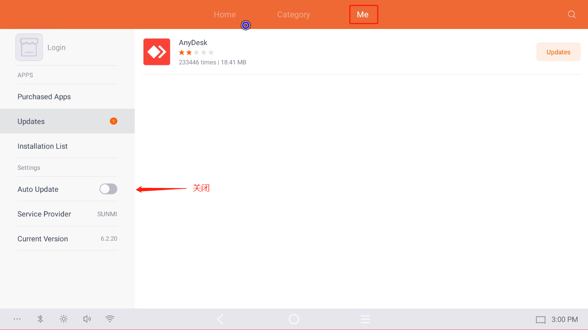

LANDrop 和 Anydesk 的安装
2024年11月13日 · Charlie
通过浏览器下载Landrop
LANDrop下载地址下载安装并打开
(P.S.同时也需要在电脑上下载好 LANDrop)
在POS机上打开软件
将 Anydesk 5.5.2 和 ADcontrol 传到POS机器上 (P.S.从电脑端将软件传到POS上) Anydesk 5.5.2 下载地址 ADcontrol for SUNMI下载地址 ADcontrol for ELC下载地址请注意，在安装 Anydesk 5.5.2 之前，需要先把 Sunmi App Store 里面的自动更新给关闭。如果未关闭，Anydesk无法设置登入密码
App Store ---> Me ---> Turn Off Auto Update
安装完成 AnyDesk 之后记得设置密码：Intelligeneer
接下来安装 ADcontrol，安装完成后需要到设置中把它打开，步骤如下
桌面 ---> 设置 (Settings) ---> 无障碍 (Accessibility) ---> AnyDesk Control Service AD1 ---> On
请注意，在安装完之后一定要用自己的电脑连接操作一次，确保是可以在自己电脑上操作POS系统
安装完之后请一定要记得拍照并记录 AnyDesk ID
Anydesk ID 记录网址